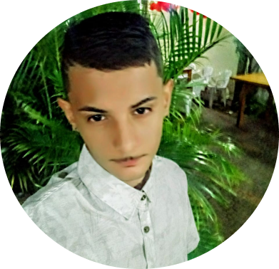

Quem sou eu no momento

Oi,meu nome é Rafael Gonçalves de Lima.Eu moro em Araras São Paulo ,no Parque das Árvoes, rua Célio Benedito da Costa e estudo na escola Maria Rosa Nucci Pascifico Homem. Ultimamente não fasso nado da vida, apenas estudo e nas horas vagas jogo com meus amigos online. Após minha escola ficar em tempo integrau, comecei a passar mais tempo na escola do que em casa, 7 horas por dia contando o fato que eu não tenho o habito de acordar cedo. Meu objetivo é entrar em ma empresa qualquer na áreae de TI e depois ir evoloindo aos poucos.